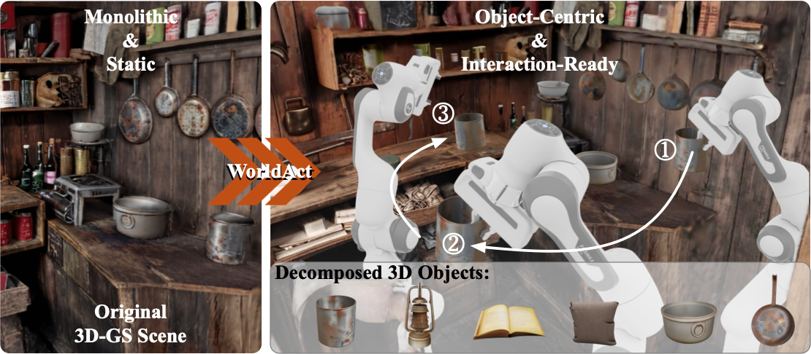

TL;DR: WorldAct turns monolithic 3DGS scenes into interactive, object-decomposed worlds with editing and embodied manipulation support.

WorldAct converts a monolithic 3DGS scene into a decomposable, object-centric, and interaction-ready environment. By separating individual 3D objects and augmenting them with structures required for physical interaction, our framework enables downstream simulation tasks such as robotic manipulation and scene rearrangement.
Recent 3D world modeling systems based on generative scene synthesis, such as Marble, can create coherent and explorable 3D environments, yet their outputs are typically static monolithic assets with limited editability and physical interaction. This restricts their use in immersive content creation and embodied simulation, where generated worlds must be actively modified and manipulated. To tackle this challenge, we present WorldAct, a framework that converts static generated 3D worlds into editable and interaction-ready scenes. WorldAct uses a multimodal agent to guide scene decomposition, identify actionable objects, reconstruct geometrically aligned object-level meshes for interaction, and restore the residual background via 3D inpainting. The resulting scenes support object-level editing, collision-aware manipulation, and embodied task execution while preserving global scene coherence. Experiments show that WorldAct enables richer interaction scenarios than the original generated scenes, suggesting a practical path toward editable and interactive 3D world models.
Visualization of WorldActd, our pipeline first decomposes the scene by segmenting and removing individual objects, then inpaints the background and regenerates clean object assets. After assembly, the resulting environment supports robotic manipulation and scene editing (adding, removing, or modifying objects).
WorldAct first decomposes a generated or reconstructed 3DGS scene into an object-removed background and a set of extracted object instances. It then restores the incomplete background, reconstructs scene-level collision geometry, and refines the extracted instances into clean object assets. Finally, WorldAct assembles these assets back into the restored scene, producing an interaction-ready environment with independent object representations.
Qualitative comparison with input scenes. For each scene, we show three different viewpoints, each with the original Marble-generated input and our decomposed interactive output. Our method preserves visual fidelity while enabling object-level decomposition and interaction.